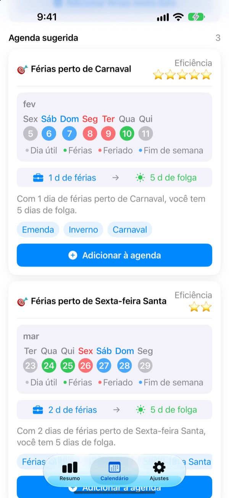
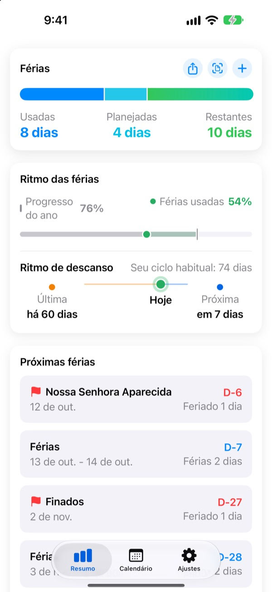
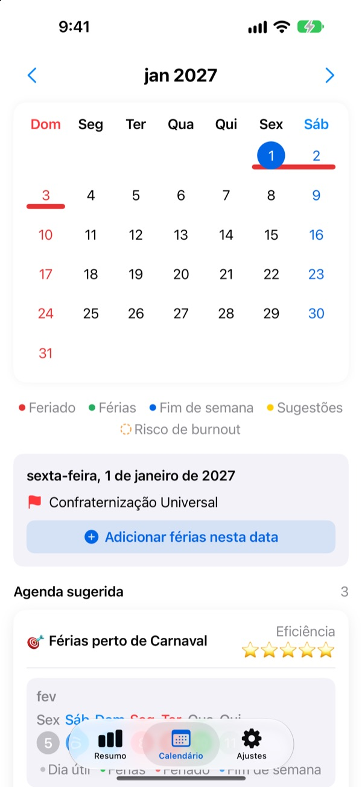
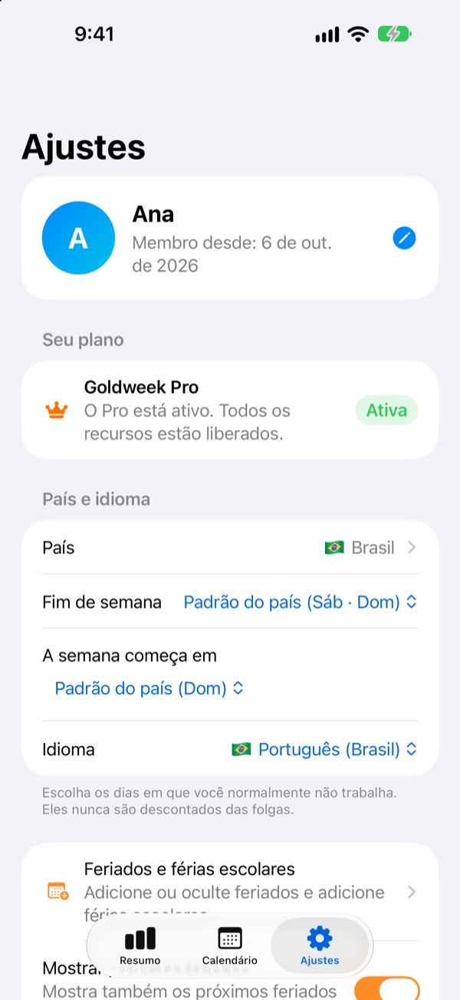

Poucos dias de folga,
feriadões longos
O Goldweek junta feriados e fins de semana e mostra exatamente quais dias tirar para ter a folga mais longa. Chega de virar as páginas do calendário contando nos dedos.
Download grátis. O controle das férias e as sugestões continuam grátis.

Até onde vão suas folgas?
Escolha quantos dias você pode tirar. Você vê as folgas mais longas que eles rendem em volta dos próximos feriados.
Cansado de contar dias no calendário?
Quinta é feriado, então tira a sexta? Ou guarda o dia para emendar o feriadão do mês que vem? De tanto virar página, você acaba tirando um dia qualquer, e em dezembro as férias que sobraram somem. O Goldweek faz a conta e mostra os dias que mais esticam suas folgas.
Suas férias num relance
Total, usadas e restantes numa tela só. Você também vê quanto do ano já passou ao lado de quanto já usou, e percebe na hora se está guardando demais.
Os dias que sobram e as próximas folgas ficam num widget na Tela de Início.

Marque folgas direto no calendário
Feriados, férias e emendas sugeridas aparecem coloridos no calendário. Toque numa data para adicionar ou editar uma folga, inclusive meio período, um quarto do dia ou horas.
Você também importa de uma vez as férias antigas a partir de uma foto da tela do RH.

Seu país, seu jeito de trabalhar
Feriados de 42 países, do Brasil e da América Latina à Europa e à Ásia. Onde os feriados mudam por estado ou região, escolha o seu. Seu país não está na lista? Adicione os feriados você mesmo.
Dá para escolher também os dias de fim de semana, o primeiro dia da semana e se você trabalha em horário fixo, meio período ou por turnos.

Comece em três passos
- 1
Diga onde você trabalha
Na primeira vez, escolha seu país e quantos dias de férias você tem por ano.
- 2
Escolha uma sugestão
Na aba Calendário estão as emendas sugeridas. Adicione as que você curtir.
- 3
Registre suas folgas
Toque numa data ou importe férias antigas por foto.
Como a conta é feita
- Dia inteiro
- 1 dia do saldo
- Meio período
- 0,5 dia
- Um quarto do dia
- 0,25 dia
- Horas
- De acordo com suas horas de trabalho naquele dia
- Atestado, licença, viagem a trabalho
- Não saem do seu saldo
- Folgas bônus
- Dias extras como folgas compensatórias, controlados à parte com data de validade (Pro)
Você pode mudar quando quiser o total de dias por ano e o mês em que começa seu período de férias em Ajustes.
Descansar bem é grátis. Planejar fica com o Plus e o Pro.
Grátis
- Dias inteiros, meio período, um quarto do dia e horas, com o saldo restante
- Feriados de 42 países, seus feriados e férias escolares
- Todas as sugestões do ano, até 3 adicionadas
- Dicas de intervalo entre folgas, lembretes e widget
- Adicionar férias por foto
- Backup no iCloud e agenda compartilhada com a família
Plus e Pro
- Plus: Planejador anual ideal
- Plus: Sugestões ilimitadas, inclusive do ano passado e do próximo
- Plus: Enviar folgas para o app Calendário
- Pro: Tudo do Plus, folgas bônus, limites anuais e saldo acumulado por tipo
- Pro: Importar o calendário escolar e detectar o calendário automaticamente
- Pro: Folgas em família e datas especiais da família
Cada nível vem como assinatura anual ou compra única vitalícia.
As assinaturas anuais renovam sozinhas se não forem canceladas pelo menos 24 horas antes do fim do período. Gerencie quando quiser em Ajustes > Conta Apple > Assinaturas.
Perguntas frequentes
Meu saldo de férias não bate.
Confira em Ajustes o mês em que começa seu período de férias e o total de dias por ano. Meio período (0,5) e um quarto do dia (0,25) são descontados automaticamente, e tipos que não contam, como atestado, licença ou viagem a trabalho, não mudam o saldo. Se ainda não bater, mande um e-mail.
Minha folga não aparece no calendário.
Folgas canceladas não aparecem no calendário. Confira o status do registro em Gestão de férias. Atualizar para a versão mais recente também pode resolver.
Como adiciono folgas bônus?
Toque em + na aba Resumo para abrir Gestão de férias e use a seção Folgas bônus lá embaixo. Escolha um tipo (folga compensatória, prêmio, descanso…), informe os dias e, se quiser, uma data de validade. As folgas bônus ficam separadas das férias normais.
Paguei, mas nada foi liberado.
Toque em Restaurar compra no fim da aba Ajustes. A compra é restaurada com a Conta Apple conectada à App Store. Se não funcionar, mande um e-mail.
Perco meus dados se apagar o app?
Os dados ficam no aparelho, então apagar o app apaga tudo. Ative o backup no iCloud para guardar uma cópia que dá para restaurar depois.
Posso adicionar meus feriados ou esconder algum?
Pode. Em Feriados e férias escolares, nos Ajustes, você adiciona seus feriados ou esconde os padrões.
Quais países são compatíveis?
O Goldweek tem os feriados de 42 países. Escolha seu país em Ajustes (e o estado ou região, quando os feriados mudam) e o calendário se atualiza na hora. Se o seu não estiver, adicione os feriados você mesmo ou peça pelo feedback no app.
Onde ficam meus dados?
O que você digita fica no seu aparelho ou no seu próprio iCloud. Só recebemos estatísticas de uso anônimas, relatórios de erro anônimos e o feedback que você escolher enviar.
Para o que não estiver respondido acima, ideias ou bugs, escreva para leeo@kakao.com. Costumamos responder em um ou dois dias úteis.